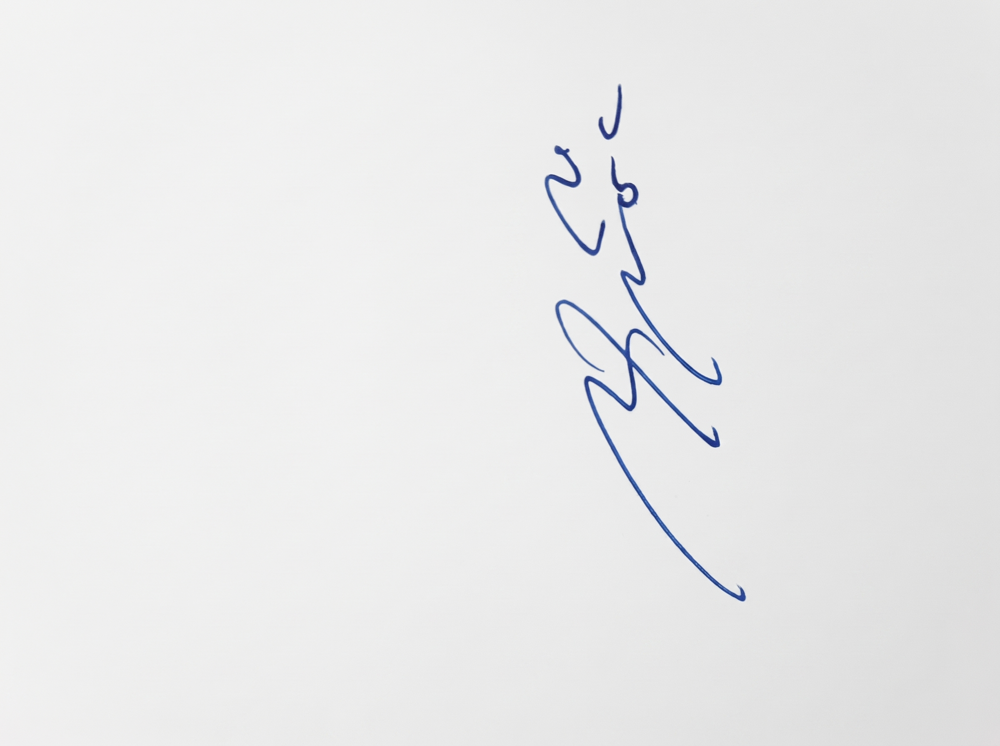

Di sinilah Anda bisa menuliskan deskripsi panjang lebar tentang proyek PRO-GRADE System. Anda bisa menjelaskan latar belakang masalah mengapa sistem ini dibuat, yakni untuk memberikan rekomendasi grading kontainer secara otomatis.
Sistem ini dibangun menggunakan ekosistem Google, secara spesifik memanfaatkan kekuatan Google Apps Script dan Google Sheets. Dengan mengolah puluhan ribu data histori transaksi, sistem ini membantu meminimalisir *human error* di lapangan.
Hasil dari penerapan purwarupa ini menunjukkan peningkatan efisiensi yang signifikan pada *yard management* di depo kontainer, memudahkan operator dalam mengambil keputusan penempatan logistik yang tepat.